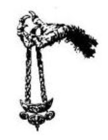

4.
A Pteranodon halálos sebet kap, s a bozótba
zuhan. Továbbvonszolod magad; a hőség szinte
elviselhetetlen, s ráadásul a magas trópusi fák közt
rajzó legyek is kínoznak. Az ágakról
kúszónövények csüngenek alá, a talajt pedig
mindenfelé hatalmas páfrányok borítják. A levegő
különös zajokkal van teli, s óriási, színes szárnyú
szitakötők szállnak virágról virágra. Az egyik fa
törzse hatalmas zajjal hirtelen szétroppan.
Megremeg a föld, amint rád ront egy óriási őskori
szörnyeteg. Három hosszú szarv mered előre
nyakát védő csontos páncéljából. Harcolnod kell…
Triceratops ÜGYESSÉG 8 ÉLETERŐ 30
Három Forduló után velőtrázó ordítást hallasz.
Most egy másik fenevad viharzik feléd. Tedd
próbára a SZERENCSÉDET!
Ha SZERENCSÉD van - lapozz a 40-re. Ha nincs
SZERENCSÉD - lapozz a 25-re.
